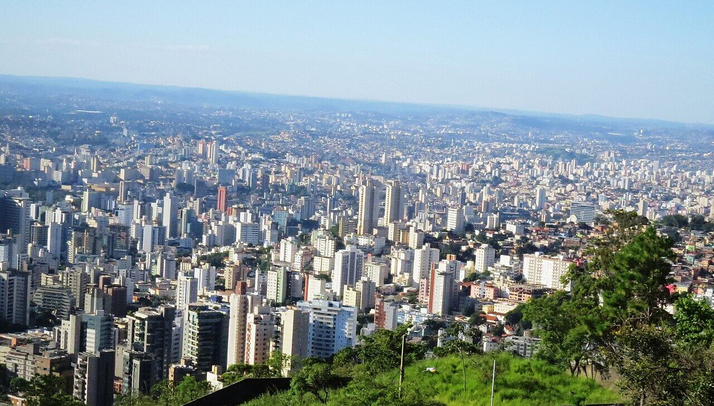
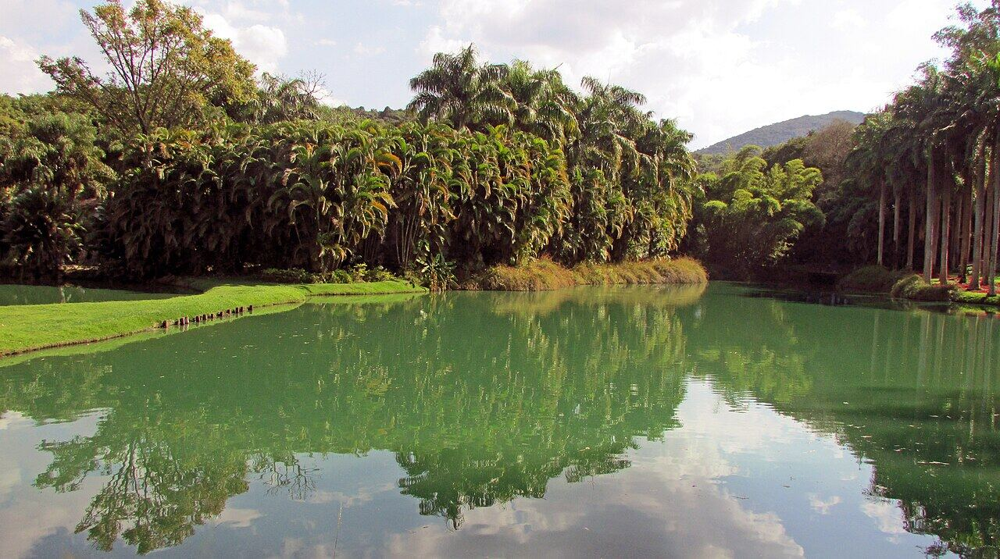
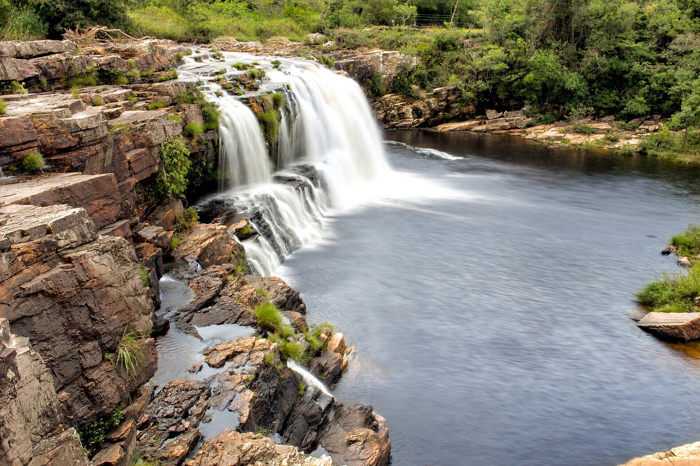
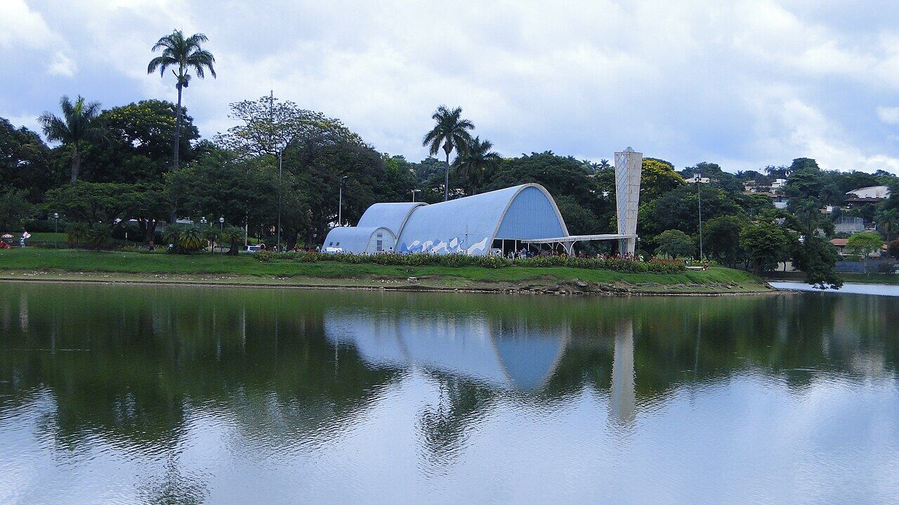
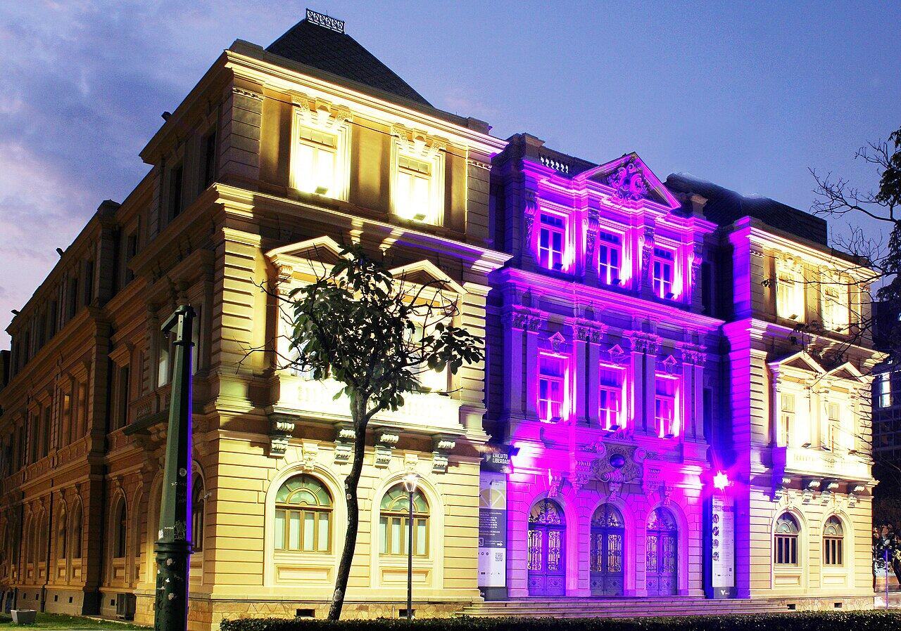
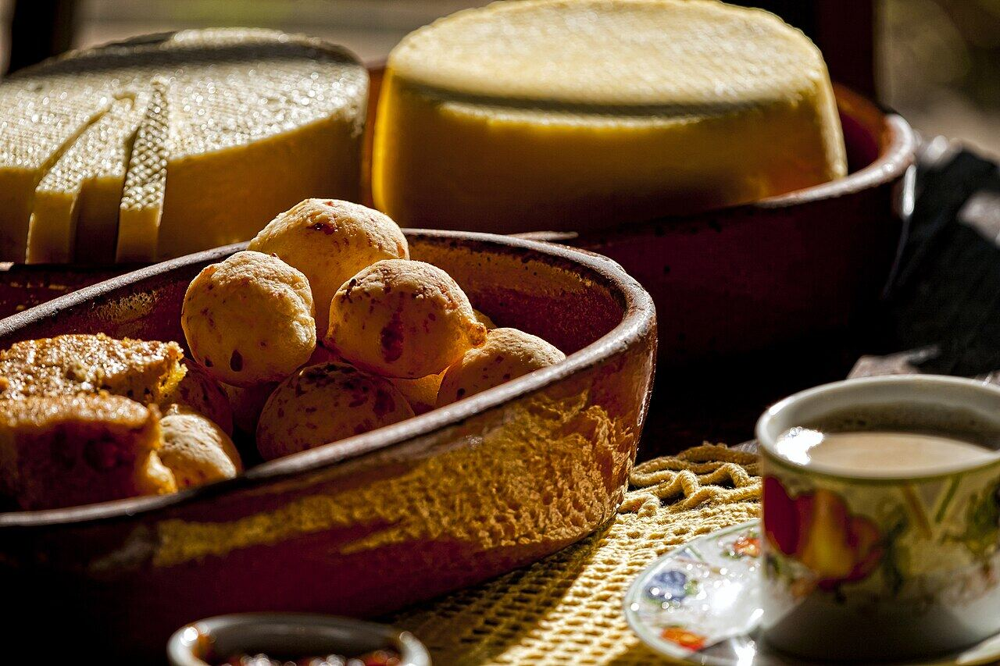
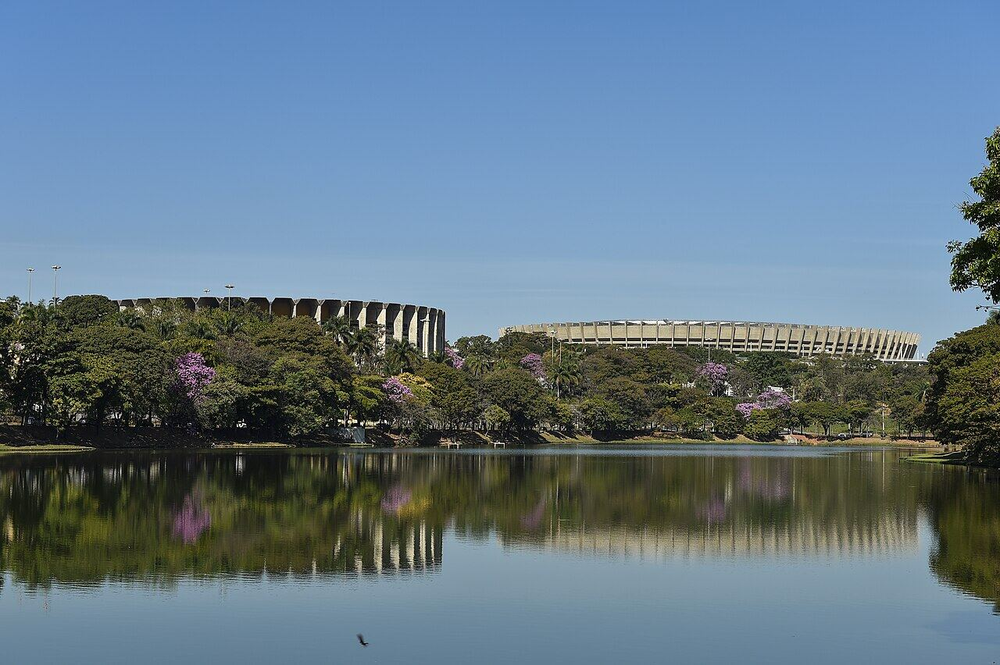

Créditos das fotos
Fotos de lugares de Minas Gerais usadas no site, todas do Wikimedia Commons, com licença livre. As fotos da casa são da Casa Prado.

Belo Horizonte vista do altoFoto: Gabrielacheloni · CC BY-SA 3.0 · Wikimedia Commons
InhotimFoto: Francisco Boratto · CC BY-SA 4.0 · Wikimedia Commons
Cachoeira Grande, Serra do CipóFoto: Rodrigo.Argenton · CC BY-SA 4.0 · Wikimedia Commons
Igreja de São Francisco, PampulhaFoto: Allan Vigiano · CC BY-SA 4.0 · Wikimedia Commons
Memorial Minas Gerais ValeFoto: Próxima Etapa · CC BY-SA 4.0 · Wikimedia Commons
Pão de queijoFoto: Jonathan Wilkins · CC BY-SA 3.0 · Wikimedia Commons
Lagoa da PampulhaFoto: MTur Destinos · Public domain · Wikimedia Commons